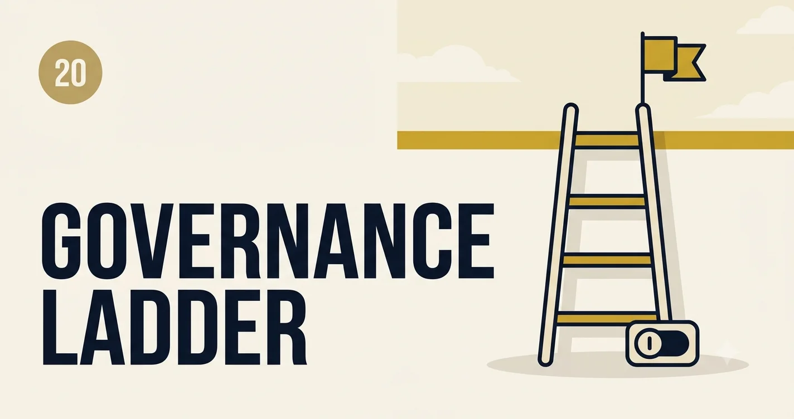

AI Governance and Responsible Deployment
Governance is not a committee that says no—it is the operating system that lets teams ship fast without betting the company on an unowned model change Friday afternoon.
What “responsible” means in production
Responsible deployment is measurable: who approved the use case, what data can flow in, how failures are detected, how users are informed, and how you roll back. Ethics and compliance are part of the same system as evals and observability—not a slide deck after launch.
Governance vs guardrails
Guardrails enforce policy at runtime. Governance decides which policies exist, who owns them, and what evidence is required before prod. You need both; guardrails without governance become whack-a-mole.
Maturity ladder
stateDiagram-v2
[*] --> L0: Ad hoc
L0 --> L1: Inventory
L1 --> L2: Risk tiering
L2 --> L3: Continuous assurance
L3 --> L4: Auditable automation
Governance Ladder self-assessment
Click your current tier. Check controls you already have; score shows gap to next level.
Risk tiers (practical)
| Tier | Examples | Gate |
|---|---|---|
| T1 Low | Internal FAQ on public docs | Automated eval + security scan |
| T2 Medium | Customer support draft | Human review sample + DLP |
| T3 High | Credit, health, legal advice | Domain expert + legal + kill switch |
RACI snapshot
- Product — use case owner, success metrics, user disclosure.
- Engineering — implementation, evals, observability, rollback.
- Security / Legal — data classification, third-party models, contracts.
- Risk / Compliance — tier approval, audit evidence.
- Executive sponsor — escalation when tier-3 incidents hit media.
Artifacts auditors ask for
- Use case charter (purpose, users, data classes, prohibited uses).
- Model card + change log (version, training cutoff, known limits).
- Eval report per release (offline + sampled online).
- Incident register and postmortems (including near-misses).
- Human oversight plan for T2/T3 (when humans must be in the loop).
Responsible UX
Disclose AI involvement where users might assume human judgment. Offer escalation and feedback. Do not hide abstains as generic errors—say when the system cannot answer safely.
Challenge
Inventory every prod LLM feature in one register. Assign tier and owner. Pick one control from the next maturity level and ship it in 30 days—usually trace IDs + eval gate on promote.